Issueを書けば、
AIが製造する
「Mythos級」開発革命
「Mythos級が無料で使える」——Xを駆け巡った朗報の裏側を、冷徹に検証する。 GitLab Duo Agent Platformに統合されたClaude Fable 5は、Issueを書くだけでAIが計画・実装・検証を連鎖実行する「エージェント型SDLC」を現実のものにした。 だが30日間Ultimate無料トライアルに付与されるのは24クレジット——軽微なチャットでも最大14回という「残酷な数学」が待つ。 1Mトークンの知能、SDLC全文脈を束ねるGitLab Orbit、クレジットを最大化するハイブリッド戦略、そしてガバナンスの罠までを総整理する。
リポジトリ全体＋過去Issueを一括把握
マルチファイル改修の初回成功率が卓越
軽微なチャットでも最大14回
クレカ登録不要で即Fable 5へ

「無料でFable 5が使える」の真実と
5つの技術的サプライズ
X（旧Twitter）でバズった「無料でClaude Fable 5が使える」という朗報。それは事実だが、その裏には知っておくべき5つの真実が隠れている。「30日間 × 24クレジット」という条件付きの解禁を、単なるお祭りで終わらせず戦略的な評価機会に変えるための全体像から始めよう。
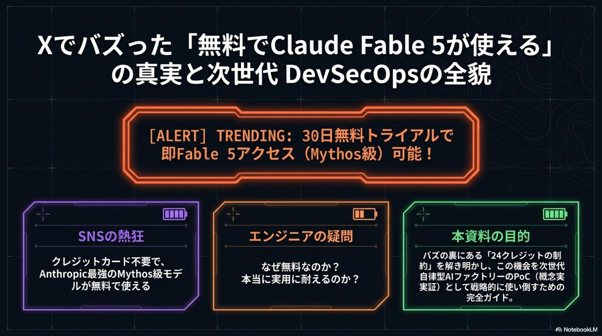
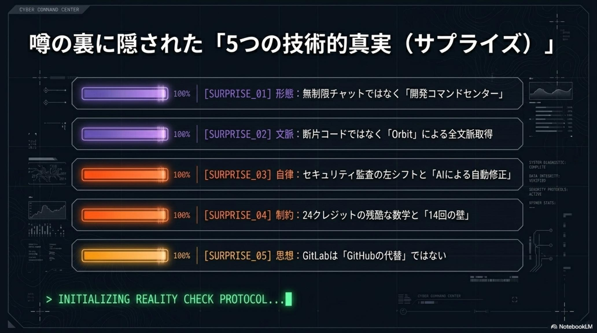
無制限ではなく「30日間の開発コマンドセンター」
「無制限のチャットアプリ」ではない。Ultimate全機能＋Duo Agentを30日間試せる司令塔として設計されている。
コードだけでなく「開発の全文脈」を自動取得
Issue・MR議論・CI/CDログ・脆弱性データまで、GitLab OrbitがSDLC全体を知識ネットワーク化してAIに供給する。
セキュリティとAI監査が物理的に「左」へシフト
計画・実装段階からセキュリティスキャンとAIレビューが組み込まれ、Shift-Leftが運用論ではなく構造になる。
24クレジットの残酷な数字と「14回の壁」
1メッセージ最低1.67クレジット。軽微なチャットでも最大14回、複雑なエージェント作業なら1〜3回で枯渇する。
GitLabは「GitHubの代替」ではない
GitHub＝コミュニティの「広場」、GitLab＝全工程を単一アプリで貫く「Software Factory（工場）」。思想が根本から違う。
開発者は「コーダー」から「AIの統括者」へ
初稿はAIが書く前提の時代。人間の仕事はレビュー・アーキテクチャ判断・安全性の統括に移る。
「補完（Autocomplete）」から
「製造（Flows）」へ——SDLCの歴史的転換
これまでの生成AI活用は、人間が書くコードを一行ずつ補う「局所的なアシスタンス」に留まっていた。2026年のパラダイムシフトは、AIがSDLC全体を俯瞰しタスクを自律的に完結させる「エージェント型」への進化だ。人間はIssue（課題）を作成するだけ——AIエージェントが計画・実装・検証を連鎖的に行い、ソフトウェアを「製造」する。
| 観点 | Then · アシスタント時代 | Now · GitLab Duo Agent 時代 |
|---|---|---|
| 人間の起点 | コードを書き、AIが一行ずつ補完 | Issueを書くだけ——計画・実装・検証はAIが連鎖実行 |
| AIの役割 | 補完（Autocomplete）を返す提案者 | ソフトウェアを「製造（Flows）」する自律エージェント |
| 初稿の作者 | 人間（白紙からコードを書く苦痛） | AI——「初稿はAIが書く」が前提になる |
| 認知負荷 | 数万行のコードベースと依存関係を人間が把握 | 把握はAIに委譲し、人間は判断に集中 |
| デリバリー | 調査→実装→MR作成を人間が手動で接続 | 調査からMR作成までのプロセスが自動化 |
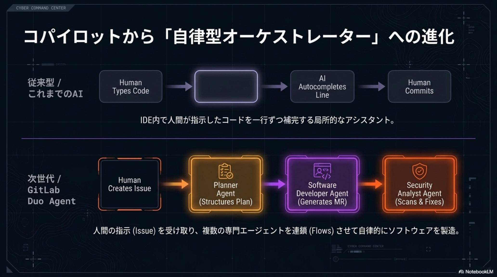
この変革の戦略的意義——生産性向上の先にあるもの
- エンジニアの認知負荷削減：数万行のコードベースや複雑な依存関係の把握をAIに委譲可能
- デリバリー速度の異次元的な向上：調査からマージリクエスト（MR）作成までのプロセスが自動化
- エンジニアの役割は、自ら手を動かす「実行者（コーダー）」から、複数のAIエージェントを指揮する「指揮者（Conductor）」へ
【驚愕の知能】Claude Fable 5
（Mythos級）の技術的解剖
2026年6月に解禁された「Claude Fable 5」は、かつて「Project Glasswing」で限定的な承認済み顧客にのみ提供されていた「Mythos 5」と同じ基盤を持ち、一般公開にあたって高度な安全制御が施された「Mythos（伝説）級」モデルだ。本質的な差別化要因は、生成能力ではなく「安全な自律性」と「長時間自律」の両立にある。
| 項目 | スペック・特性 |
|---|---|
| コンテキストウィンドウ | 100万（1M）トークン——リポジトリ全体の構造、過去のIssueを一度に把握 |
| 最大出力 | 12.8万（128k）トークン |
| 思考エンジン | Adaptive Thinking（適応型思考）を常時搭載し、推論パスを最適化 |
| ベンチマーク | SWE-bench Pro 約80%。複雑なマルチファイルリファクタリングで卓越した初回成功率（First-shot accuracy） |
| 安全性 | 機微なプロンプトに対し Opus 4.8 への自動フォールバック（発動率5%未満） |
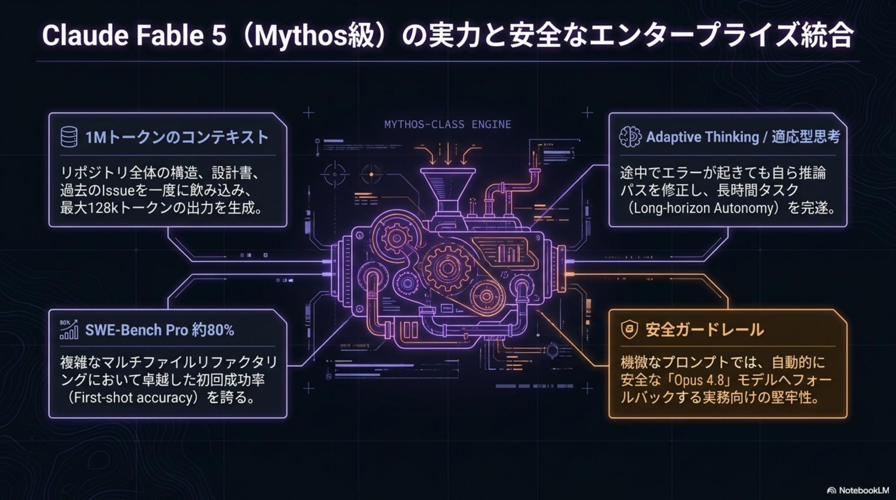
Safety-First Autonomy
自身の限界を認識し、必要に応じて人間に承認を求める「安全な自律性」。暴走ではなく統制された自律を実現する。
Long-horizon Autonomy
数日間にわたるタスクを自己修正しながら完遂させる長時間自律。単発の応答ではなく「プロジェクト」を任せられる。
Adaptive Thinking 常時搭載
タスクの難易度に応じて推論パスを動的に最適化。軽いタスクは速く、重いタスクは深く考える。
ただし、この卓越した「知能」が真価を発揮するためには、SDLC全体の文脈を統合したデータ構造が不可欠だ。それがGitLab独自の知のネットワーク——「GitLab Orbit」である。
「GitLab Orbit」——
SDLC全体を統合する知のネットワーク
AIの精度を決定づけるのは、モデル性能以上に「与えられる文脈（コンテキスト）の質」だ。GitLabは、単一アプリケーションで全工程を完結させる「Software Factory（工場）」としての統合力を背景に、競合の断片的なRAGとは一線を画す「GitLab Orbit」を展開する。
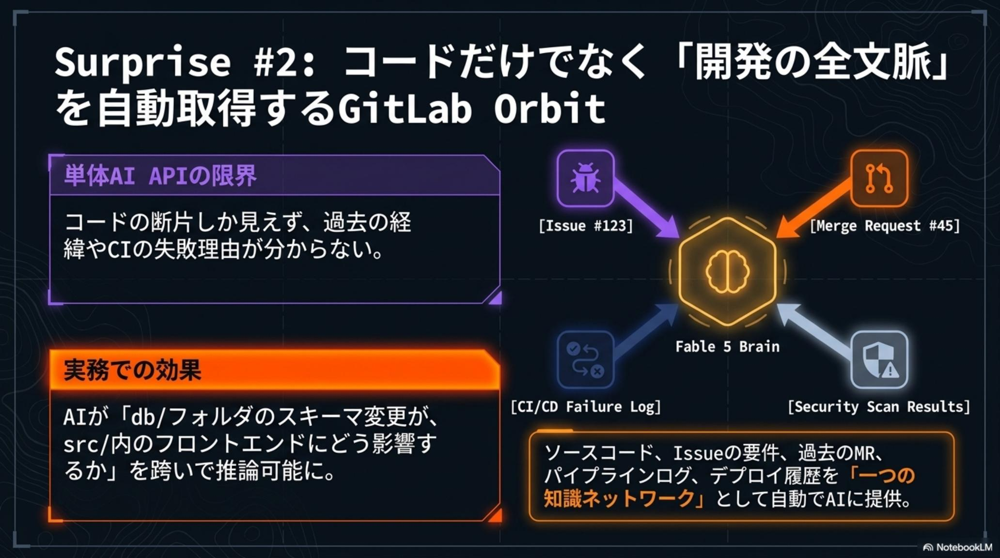
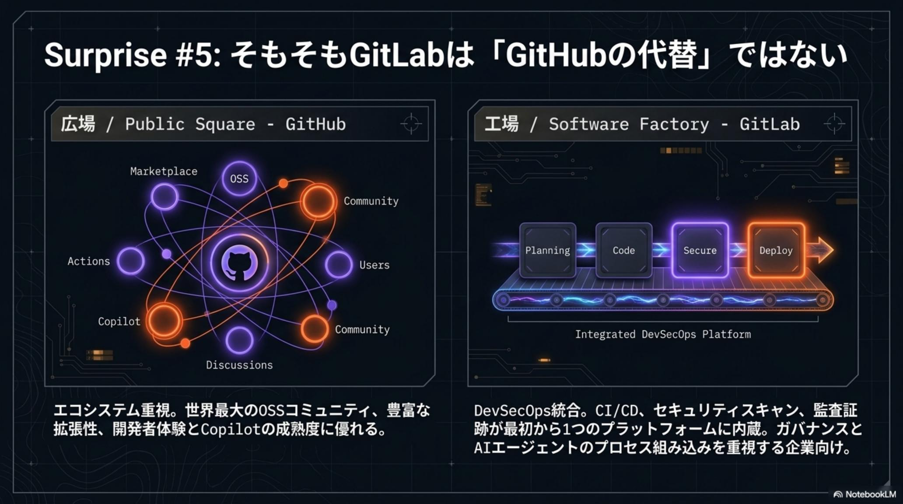
Orbitが単一の「知識ネットワーク」として統合する情報
- Issueの要件と背景——何を・なぜ作るのかという意図
- 過去のMRにおける議論の履歴——設計判断の経緯
- CI/CDパイプラインの失敗ログおよび履歴——壊れ方のパターン
- セキュリティスキャンによる脆弱性データ——リスクの所在
- 本番環境へのデプロイ履歴——変更が世界に出た記録
| 観点 | 単体AI API / 断片的RAG | GitLab Orbit（ライフサイクルグラフ） |
|---|---|---|
| 見える範囲 | 「コードの断片」しか見えない | ディレクトリ・アプリケーション層を跨いだ依存関係を推論 |
| 文脈取得コスト | 人間が都度コピペ・添付で供給 | ゼロコスト（あるいは極めて低コスト）で正確な文脈を自動取得 |
| 影響範囲分析 | アーキテクチャ横断の影響は不可視 | 複雑なアーキテクチャ上の影響範囲を瞬時に特定 |
| プラットフォーム思想 | GitHub＝コミュニティとエコシステムの「広場（Public Square）」 | GitLab＝全工程を単一アプリで貫く「工場（Software Factory）」 |
しかし、この強力なプラットフォームを「無料」で体験する際には、冷徹な数学的制約を理解しておく必要がある。
【サプライズと現実】
無料トライアルと「24クレジットの壁」
「Mythos級が無料で使える」と話題になった背景には、GitLab.comの「30日間 Ultimate無料トライアル」がある。クレジットカード登録不要（状況によりIdentity Verificationあり）で即座にFable 5へアクセスできるのは驚異的だ。——だが付与されるのは「24 GitLab Credits」という限定的な命綱のみ。
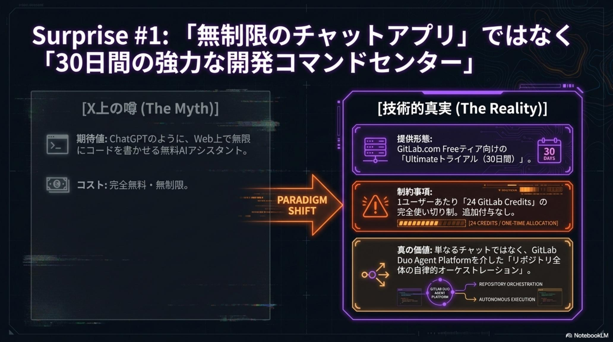
「残酷な数学」——14回のリクエスト限界
Fable 5のリクエスト消費率に基づいて計算すると、以下のシビアな現実が浮き彫りになる。
| タスクの重さ | 1回あたりの推定消費クレジット | 24クレジットでの実行可能回数 |
|---|---|---|
| 軽微なチャット | 1.67 Credits（最低ライン） | 最大14回 |
| 標準的なMRレビュー | 4〜8 Credits | 3〜6回 |
| 複雑なエージェント作業 | 8〜25 Credits | 1〜3回 |
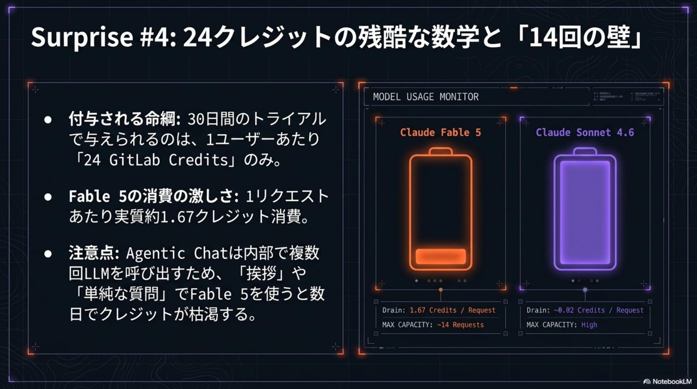
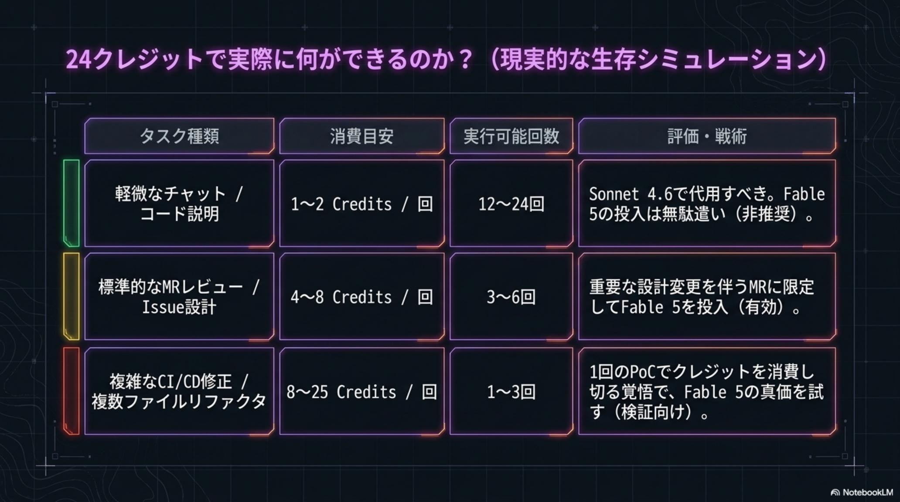
⚠️ 警告——「挨拶」でクレジットを溶かすな
- 「1メッセージ＝1.67クレジット」はあくまでリクエスト単価の最低ライン
- Agentic Chatは内部で思考ループ（複数回のLLM呼び出し）を繰り返すため、1回のプロンプトで数クレジットを一気に「溶かす」可能性がある
- 「挨拶」だけで貴重なクレジットを浪費することは、プロフェッショナルな運用において厳禁
戦略的ハイブリッド運用——
クレジットを最大化する検証ロードマップ
Fable 5の真価を見極める鍵は、タスクの難易度に応じてモデルを使い分ける「ハイブリッド最適化戦略」だ。日常業務は低コストのSonnet 4.6に任せ、Fable 5は「ここぞ」の決戦兵器として温存する。
| モデル | 推奨される用途 | 特性 |
|---|---|---|
| Sonnet 4.6 | 日常のコーディング、関数の説明、単一ファイル修正 | 低コスト・デフォルトモデル |
| Fable 5 | 重武装タスク（複数ファイル改修、RCA、大規模設計） | 高コスト・「ここぞ」の決戦兵器 |
⚠️ 重要な落とし穴——Code Review FlowはFable 5非対応
- GitLab UI上の専用ボタンから実行する「Code Review Flow」は、現在Fable 5に非対応
- 高度なレビューを行いたい場合は、Agentic Chat経由で手動でMRを読み込ませる運用回避（Workaround）が必要
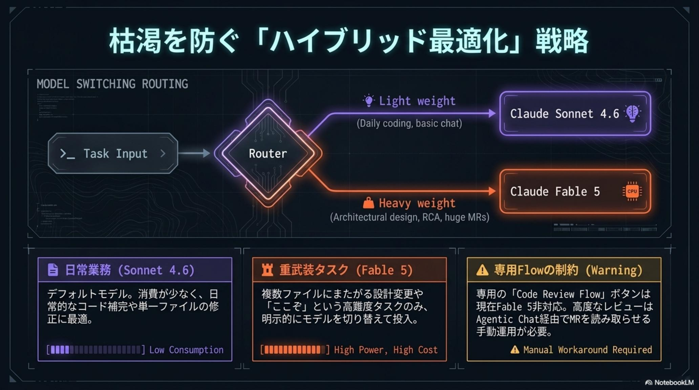
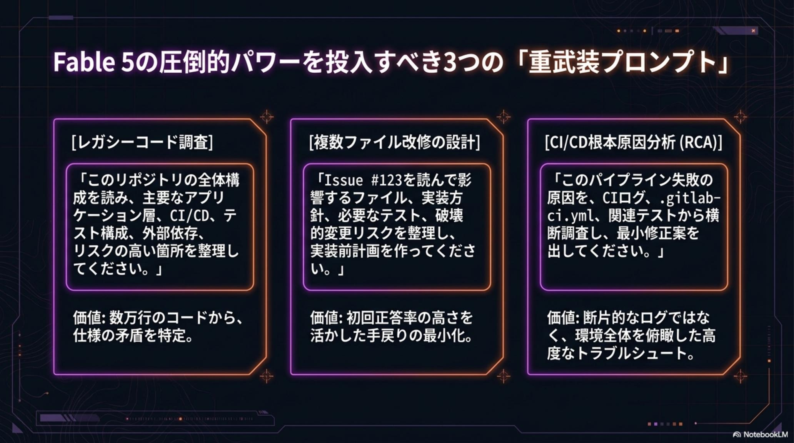
Fable 5に投入すべきリテラル・プロンプト例（コピペ推奨）
1クレジットも無駄にしないために、Fable 5には「重い問い」だけをぶつける。以下はそのまま使える3つの決戦プロンプトだ。
# 1. レガシーコード調査 — リポジトリ全体のAIマッピング > このリポジトリの全体構成を読み、主要なアプリケーション層、CI/CD、 テスト構成、外部依存、リスクの高い箇所を整理してください。 # 2. 複数ファイル改修の設計 — 実装前計画 > Issue #123を読んで影響するファイル、実装方針、必要なテスト、 破壊的変更リスクを整理し、実装前計画を作ってください。 # 3. CI/CD根本原因分析（RCA） > このパイプライン失敗の原因を、CIログ、.gitlab-ci.yml、関連テスト から横断調査し、最小修正案を出してください。 ✓ 24クレジットは「重い問い」だけに投資する
30日間 PoC ロードマップ
準備・調査
トライアル開始。リポジトリのAIマッピングと技術負債の抽出。Sonnet 4.6で軽量タスクの感触を掴み、クレジットは温存する。
設計・計画
難易度の高いIssueを1つ選び、Fable 5に実装方針とリスクを定義させる。実装前計画の質で「Mythos級」の知能を測る。
実戦展開
複雑なバグのRCAや大規模リファクタリングを試行し、エージェントの限界をテスト。残クレジットと相談しながら「決戦」に投入する。
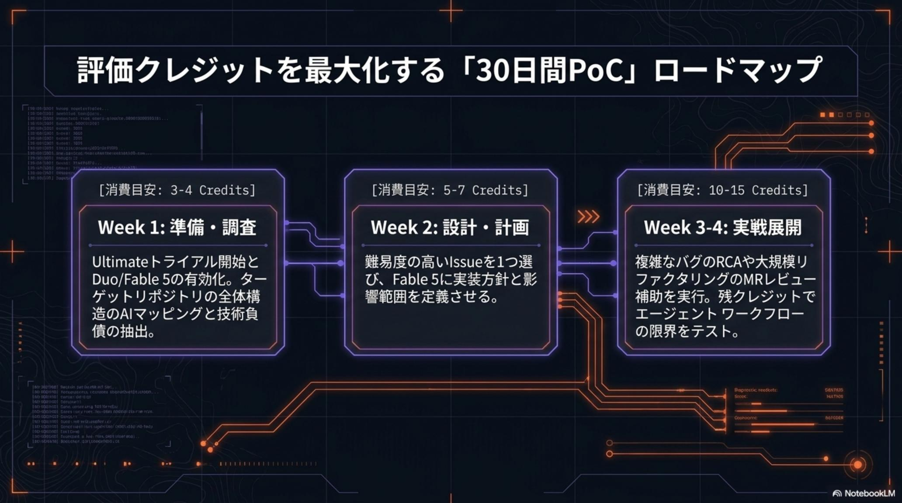
エンタープライズ・ガバナンスと
無視できない3つの罠
技術的な卓越性の一方で、組織導入時に無視できない「ガバナンスの罠」が複数存在する。セキュリティとコンプライアンスの責任者が、トライアル開始前に必ず押さえるべき3点を挙げる。
⚠️ Trap 1 — データ保持のリスク
- Anthropic側のポリシーにより、Fable 5の利用データは安全性監視目的で30日間保持される
- 不正検知時は「最大2年間」保持される可能性がある点に留意が必要
⚠️ Trap 2 — シークレットのRedaction非対応
- Web UIのDuo Chat経由の入力には、シークレット情報の自動伏せ字化（Redaction）が効かない
- 機密トークンを手動で除外する運用ポリシーの徹底が必須
⚠️ Trap 3 — 輸出管理リスク
- 米国政府による最新AIモデルの外国アクセス制限（輸出管理）という地政学的リスクを、今後の不確実要素として注視する必要がある
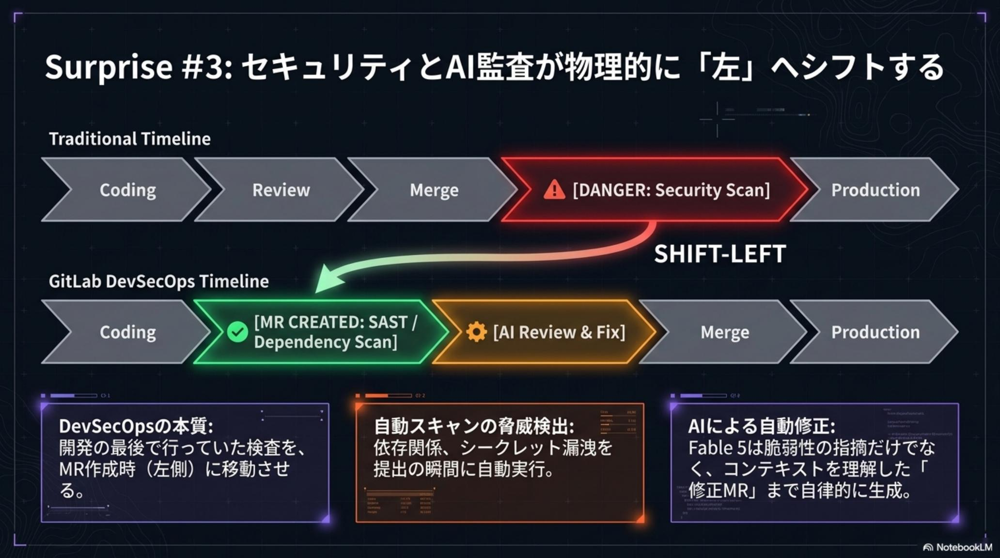
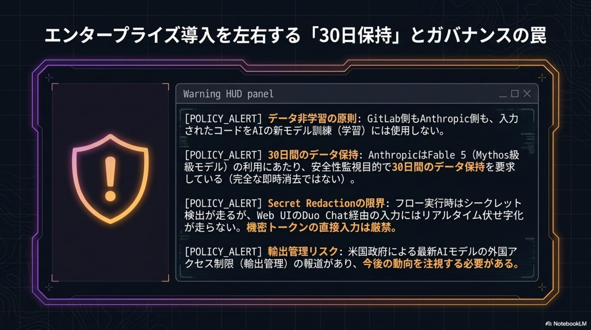
結論——コードを書く「実行者」から
「オーケストレーター」への進化
Claude Fable 5とGitLab Duoの統合がもたらすのは、単なる生産性向上ではなくエンジニアリングの定義そのものの書き換えだ。開発者の役割は、コードを書く「実行者」から、AIエージェントの提案をレビューし、アーキテクチャの妥当性と安全性を統括する「オーケストレーター」へと進化する。
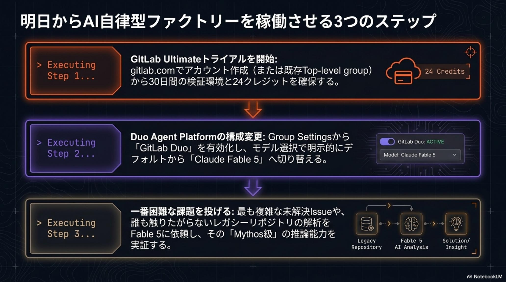
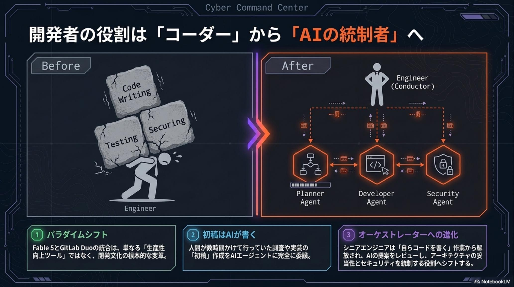
① まず触る — 30日トライアル
クレカ不要のUltimate無料トライアルでFable 5に即アクセス。ただし24クレジットの全弾数を常に意識する。
② 使い分ける — ハイブリッド運用
日常はSonnet 4.6、決戦はFable 5。重武装プロンプト3選で「重い問い」だけに投資する。
③ 統制する — ガバナンス設計
30日（最大2年）保持・Redaction非対応・輸出管理の3つの罠に運用ポリシーで先回りする。
「AIエージェントはもはや未来の構想ではなく、今日の実戦力です。この『Mythos級』の力を正しく統制し、戦略的にプロセスへ組み込むことこそが、次世代のソフトウェア開発をリードする唯一の道です」— GitLab Duo × Claude Fable 5 開発革命レポート · 結論（2026年6月13日）